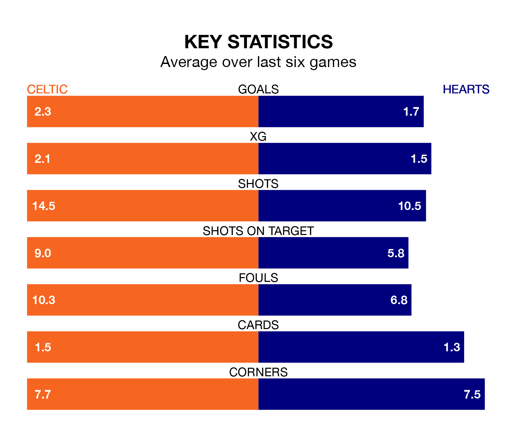

Two of the Premiership's top sides face each other at Celtic Park in Saturday's kick-off, when table-topping Celtic host third-placed Hearts.
Celtic have picked up 25 wins and six draws from 34 games so far this season, and sit 18 points above the visitors going into the 3pm match.
Hearts, meanwhile, have won 19 and drawn six, picking up 63 points.
With 82 goals in 34 games so far this season, Celtic are the league's highest scorers with 2.4 goals per game. And they are conceding fewer than average, letting in 27 goals at a rate of 0.8 per game.
Hearts are also above average scorers, with 1.4 goals per game, compared to a league average of 1.3. They have conceded 1.0 goal per game.
In Lawrence Shankland, the away side have the league's sharpest shooter so far this season. He has notched 21 goals in 33 appearances.
His goal rate of one every 141 minutes is quicker than that of Matthew O'Riley, the Bhoys's top scorer with a goal every 223 minutes, and a total of 13 goals in 33 games.
In the last 10 years, Celtic and Hearts have played each other on 35 occasions. Celtic won 27 of them, Hearts five, and they drew three times.
On average, the Bhoys scored 2.5 goals and Hearts 1.0 in those matches.
Their last meeting was on March 3, when Hearts won 2-0 at home.
The hosts are in good form in the Premiership, with four wins and a draw from their last six games.
With three wins and two draws over that period, Hearts's form is slightly worse – they have taken 11 points from 18, compared to Celtic's 13.
Celtic's last match was on Sunday, a 2-1 win against Dundee, with James Forrest getting the goals for the Bhoys.
Hearts drew 0-0 with Kilmarnock last time out, on April 27.
Updated: 10:44 (UTC), 30/04/24